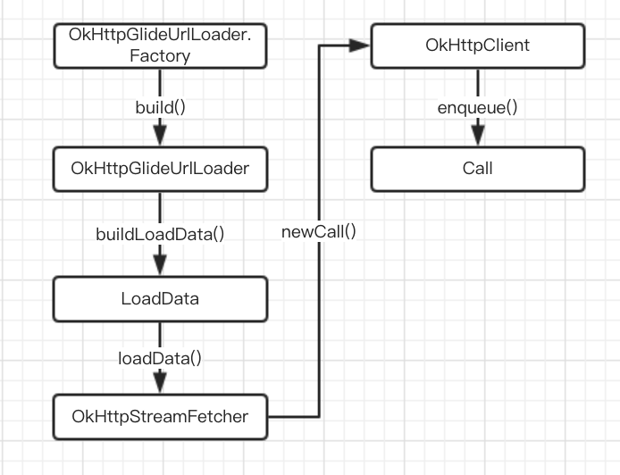
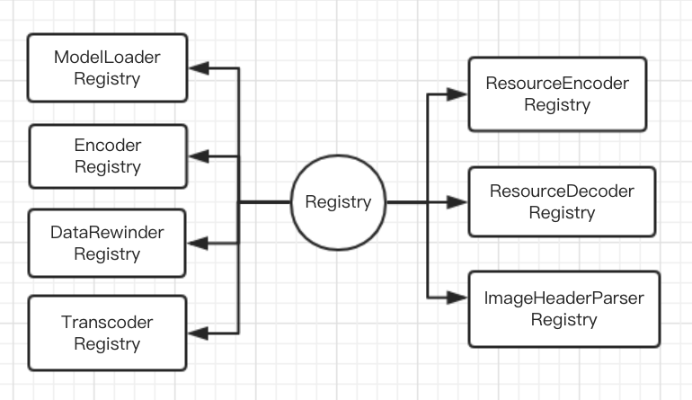
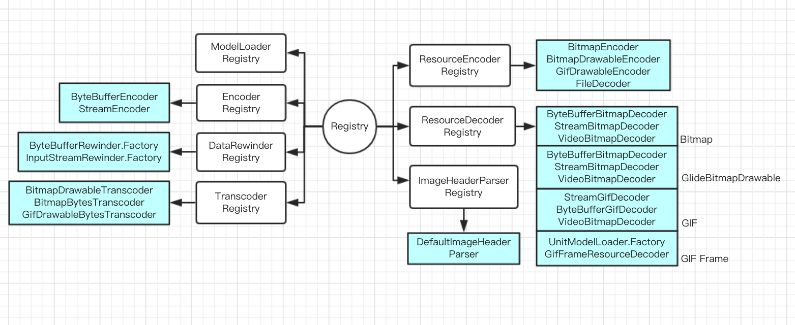
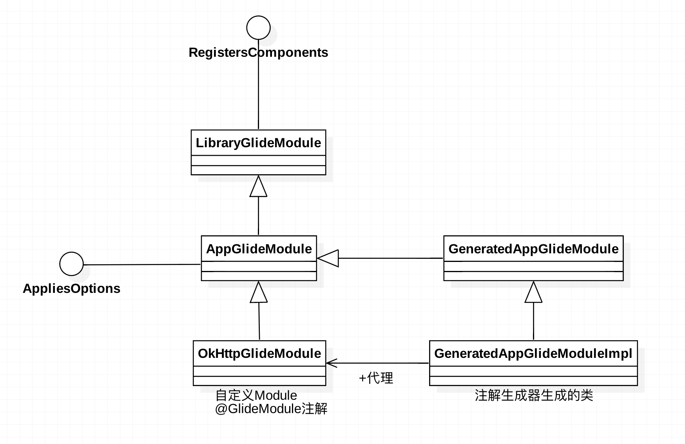

Glide的Registry和GlideModule机制非常强大。我们可以给Glide添加自定义的GlideModule，更灵活更精细地控制应用中的图片加载流程。
使用OkHttp加载图片 理解Registry和GlideModule机制前先来看看用法。
实现ModelLoader
实现ModelLoaderFactory
实现DataFetcher
三者的关系如下图所示。

再来看具体代码。
1 2 3 4 5 6 7 8 9 10 11 12 13 14 15 16 17 18 19 20 21 22 23 24 25 26 27 28 29 30 31 32 33 34 35 36 37 38 39 40 41 42 43 44 45 46 47 48 49 50 51 52 53 54 55 56 57 58 59 60 61 62 63 64 65 66 67 68 69 70 71 72 73 74 75 76 77 78 79 80 81 82 83 84 85 86 public class OkHttpGlideUrlLoader implements ModelLoader <GlideUrl , InputStream > private final OkHttpClient client; public OkHttpGlideUrlLoader (OkHttpClient client) this .client = client; } @Nullable @Override public LoadData<InputStream> buildLoadData (GlideUrl glideUrl, int width, int height, Options options) return new LoadData<>(glideUrl, new OkHttpStreamFetcher(client, glideUrl)); } public static class Factory implements ModelLoaderFactory <GlideUrl , InputStream > private OkHttpClient client; public Factory () client = new OkHttpClient(); } @Override public ModelLoader<GlideUrl, InputStream> build (MultiModelLoaderFactory multiFactory) return new OkHttpGlideUrlLoader(client); } } } public class OkHttpStreamFetcher implements DataFetcher <InputStream > private static final String TAG = "OkHttpStreamFetcher" ; private final OkHttpClient client; private final GlideUrl url; private InputStream inputStream; private volatile Call call; @Synthetic private ResponseBody responseBody; public OkHttpStreamFetcher (OkHttpClient client, GlideUrl url) this .client = client; this .url = url; } @Override public void loadData (Priority priority, final DataCallback<? super InputStream> callback) Request.Builder requestBuilder = new Request.Builder().url(url.toStringUrl()); for (Map.Entry<String, String> headerEntry : url.getHeaders().entrySet()) { String key = headerEntry.getKey(); requestBuilder.addHeader(key, headerEntry.getValue()); } final Request request = requestBuilder.build(); call = client.newCall(request); call.enqueue(new Callback() { @Override public void onFailure (Request request, IOException e) if (Log.isLoggable(TAG, Log.DEBUG)) { Log.d(TAG, "onFailure: OkHttp failed to obtain result" , e); } callback.onLoadFailed(e); } @Override public void onResponse (Response response) throws IOException responseBody = response.body(); if (response.isSuccessful()) { long contentLength = responseBody.contentLength(); if (Log.isLoggable(TAG, Log.DEBUG)) { Log.d(TAG, "onResponse: contentLength=" + contentLength); } inputStream = ContentLengthInputStream.obtain(responseBody.byteStream(), contentLength); callback.onDataReady(inputStream); } else { callback.onLoadFailed(new HttpException(response.message(), response.code())); } } }); } ... }
最后将OkHttpGlideUrlLoader注册到Glide当中。这样理解registry.replace()这段代码：使用OkHttpGlideUrlLoader从GlideUrl类型的Model中加载InputStream类型的数据。
1 2 3 4 5 6 7 8 9 10 11 12 13 14 @GlideModule public class OkHttpGlideModule extends AppGlideModule @Override public void registerComponents (Context context, Glide glide, Registry registry) registry.replace(GlideUrl.class , InputStream .class , new OkHttpGlideUrlLoader .Factory ()) ; } @Override public boolean isManifestParsingEnabled () return false ; } }
注意OkHttpStreamFetcher.loadData()中会打印出contentLength。如果一切正常，点击button加载图片时logcat中可以看到如下日志：
1 07-15 14:22:59.312 20636-2114/com.example.demo_glide D/OkHttpStreamFetcher: onResponse: contentLength=52341
如果你想监听Glide从是否从网络下载了过大的图片，contentLength可以作为监控指标。
Registry Glide中Registry用于管理组件的注册工作。不过Glide中的组件相当多，比如各种ModelLoader、Encoder、ResourceDedecoder、Transcoder等等。Registry一人实在应付不来，于是它当大管家，实际管理组件的工作交给下面的人去做。例如，对ModelLoader的管理工作，实际上由ModelLoaderRegistry完成。

1 2 3 4 5 6 7 8 9 10 11 12 13 14 15 16 17 18 19 public <Model, Data> Registry append (Class<Model> modelClass, Class<Data> dataClass, ModelLoaderFactory<Model, Data> factory) modelLoaderRegistry.append(modelClass, dataClass, factory); return this ; } public <Model, Data> Registry replace (Class<Model> modelClass, Class<Data> dataClass, ModelLoaderFactory<Model, Data> factory) modelLoaderRegistry.replace(modelClass, dataClass, factory); return this ; } public <Model> List<ModelLoader<Model, ?>> getModelLoaders(Model model) { List<ModelLoader<Model, ?>> result = modelLoaderRegistry.getModelLoaders(model); if (result.isEmpty()) { throw new NoModelLoaderAvailableException(model); } return result; }
同一类组件不一定唯一存在。比如可以同时有多个ModelLoader，你可以调用append()添加ModelLoader，调用replace()替换成新的ModelLoader。getModelLoaders()返回处理可以加载某种指定类型Model的ModelLoader。
Glide内置的组件相当之多。创建Glide实例时对这些组件进行注册管理。代码如下(有省略)：
1 2 3 4 5 6 7 8 9 10 11 12 13 14 15 Glide( Context context, Engine engine, ...) { registry.register(ByteBuffer.class , new ByteBufferEncoder ()) .register (InputStream .class , new StreamEncoder (arrayPool )) /* Bitmaps */ .append (ByteBuffer .class , Bitmap .class , new ByteBufferBitmapDecoder (downsampler )) .append (InputStream .class , Bitmap .class , new StreamBitmapDecoder (downsampler , arrayPool )) .append (ParcelFileDescriptor .class , Bitmap .class , new VideoBitmapDecoder (bitmapPool )) .register (Bitmap .class , new BitmapEncoder ()) ... glideContext = new GlideContext(context, registry, ...) }

ModelLoaderFactory类型太多，故图中省略。
加载自定义Module 上文中我们知道内置组件和自定义组件均由Registry管理。那么自定义组件如何被加载和管理呢？
GlideModule注解 首先需要了解的是GlideModule注解。GlideModule注解的定义非常简单。
1 2 3 4 5 6 7 8 9 @Target (ElementType.TYPE)@Retention (RetentionPolicy.SOURCE)public @interface GlideModule { String glideName () default "GlideApp" ; }
从代码我们知道以下几点：
这个注解用于类、接口或者enum类型。这个注解会被javac编译器忽略
缺省会生成GlideApp类，建议使用GlideApp作为Glide库的调用入口
Glide的注解处理器会在编译期将带有GlideModule注解的LibraryGlideModule和AppGlideModule子类作为组件注册到Glide
注意，除了要给LibraryGlideModule和AppGlideModule子类添加@GlideModule注解外，build.gradle中还要添加相应的依赖
1 2 3 4 5 6 7 8 9 apply plugin: 'kotlin-kapt' dependencies { kapt 'com.github.bumptech.glide:compiler:4.0.0' }
Glide注解生成器生成的类包括
GlideApp - Glide库调用入口
GeneratedRequestManagerFactory - 不用关注
GeneratedAppGlideModuleImpl - GeneratedAppGlideModule的子类，方法调用会代理到我们自定义的OkHttpGlideModule

Glide注解处理器的好处包括：
GlideApp作为Glide库入口，GlideApp只提供核心的方法。终于告别敲完”Glide.”后一堆方法提示让你不知所措的日子
不必在AndroidManifest.xml添加<meta-data />。感觉<meta-data>很容易出错
Glide注解处理器只能生成一个组件，而在AndroidManifest.xml中可以添加多个。不过多数情况下，这不是问题。
加载流程 分析Glide代码不难理解加载自定义组件的整个过程。
1 2 3 4 5 6 7 8 9 10 11 12 13 14 15 16 17 18 19 20 21 22 23 24 25 26 27 28 29 30 31 32 33 34 35 36 37 38 39 40 41 42 43 44 45 46 47 48 49 50 51 52 private static void initializeGlide (Context context) Context applicationContext = context.getApplicationContext(); GeneratedAppGlideModule annotationGeneratedModule = getAnnotationGeneratedGlideModules(); List<GlideModule> manifestModules = Collections.emptyList(); if (annotationGeneratedModule == null || annotationGeneratedModule.isManifestParsingEnabled()) { manifestModules = new ManifestParser(applicationContext).parse(); } if (annotationGeneratedModule != null && !annotationGeneratedModule.getExcludedModuleClasses().isEmpty()) { Set<Class<?>> excludedModuleClasses = annotationGeneratedModule.getExcludedModuleClasses(); for (Iterator<GlideModule> iterator = manifestModules.iterator(); iterator.hasNext();) { GlideModule current = iterator.next(); if (!excludedModuleClasses.contains(current.getClass())) { continue ; } iterator.remove(); } } ... GlideBuilder builder = new GlideBuilder()...; ... if (annotationGeneratedModule != null ) { annotationGeneratedModule.applyOptions(applicationContext, builder); } Glide glide = builder.build(applicationContext); ... if (annotationGeneratedModule != null ) { annotationGeneratedModule.registerComponents(applicationContext, glide, glide.registry); } Glide.glide = glide; } private static GeneratedAppGlideModule getAnnotationGeneratedGlideModules () GeneratedAppGlideModule result = null ; try { Class<GeneratedAppGlideModule> clazz = (Class<GeneratedAppGlideModule>) Class.forName("com.bumptech.glide.GeneratedAppGlideModuleImpl" ); result = clazz.newInstance(); } catch (ClassNotFoundException e) { ... } return result; }
上面的annotationGeneratedModule.registerComponents()方法会调用到我们自定义的OkHttpGlideModule。回顾一下其代码，加深理解。
1 2 3 4 5 6 7 8 9 10 11 12 13 14 @GlideModule public class OkHttpGlideModule extends AppGlideModule @Override public void registerComponents (Context context, Glide glide, Registry registry) registry.replace(GlideUrl.class , InputStream .class , new OkHttpGlideUrlLoader .Factory ()) ; } @Override public boolean isManifestParsingEnabled () return false ; } }
参考 Glide v4 : Configuration